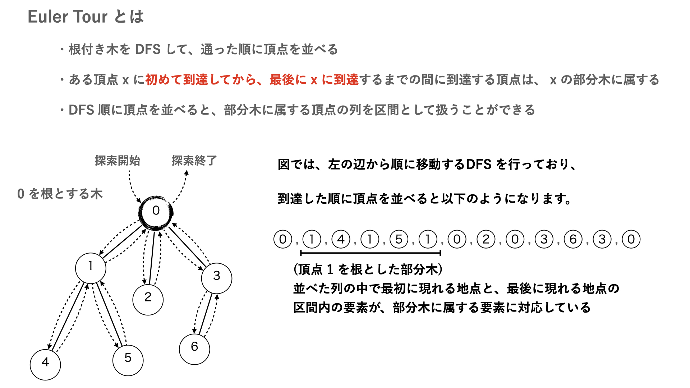
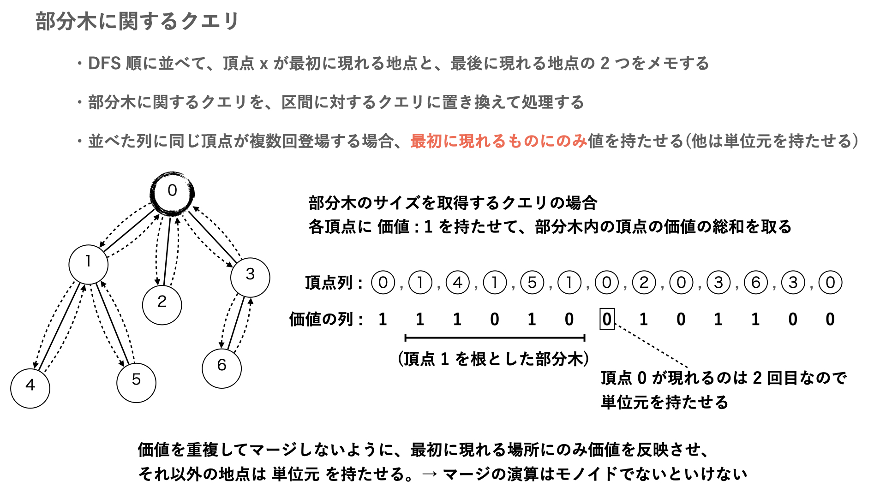
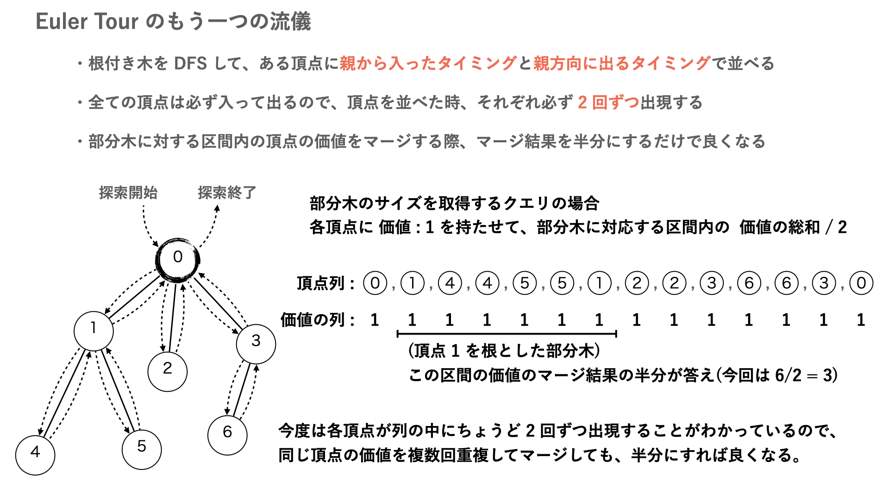

木に関するクエリ問題では、部分木に対するクエリがよく出題されます。そこで、部分木に関するクエリを列に対するクエリに変換することで、セグ木などを用いて効率的に処理することを考えます。
部分木 → 列に変換するアルゴリズムに、以下で紹介する Euler Tour というものがあります。



ある頂点 \(s\) の部分木の部分とそうでない部分は、Euler Tour で \(s\) 位置の両端の内外で分別されています。
部分木を列に変換すると嬉しい場面として